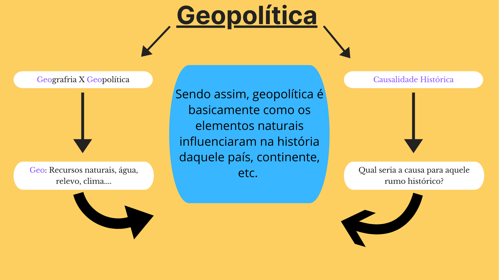

Do que se trata o site?
O Telos Geopolítica surge com o intutio de debater o campo da geopolítica na contemporaneidade.
Mas o que seria Geopolítica?
Para que possamos compreender a geopolítica, podemos começar pelo significado da palavra, “geopolítica” que se assemelha, em parte, à geografia e não é à toa. Geo, o prefixo em ambas as palavras diz respeito à elementos básicos e fundamentais encontrados na natureza: água, relevo, clima, recursos naturais. E geopolítica trata justamente destes componentes naturais e como os mesmos influenciam na política de um País.
Assim, o espaço em que nos encontramos pode orientar todo o futuro e dinâmicas de uma nação. Por exemplo, este país possui acesso às rotas marítimas, acesso ao mar. Este país possui grandes reservas de petróleo, o chamado ouro preto. Estas questões podem afetar diretamente o curso histórico do país, ou seja, geopolítica é a relação geográfica e a causalidade histórica.
Um exemplo histórico foi na Segunda Guerra Mundial, onde o clima do espaço Russo fez com que os ataques nazistas fossem extremamente retalhados, devido ao frio intenso causado pelo inverno russo, dando aos russos uma enorme vantagem geopolítica. Ou seja, o espaço influenciou no futuro russo e mundial. Isto é geopolítica.
O Telos surge justamente com o intuito de tornar mais didático e mais acessível discussões geopolíticas, de caráter mundial e regional. E logo nesta estreia do site, é necessário que alguns conceitos, e pré-conceitos sejam introduzidos.

Dentre os conceitos necessários está o da globalização que vai refletir muito na atual geopolítica e no nosso mundo como um todo. O fenômeno da globalização é muito debatido por diversos estudiosos e não há ao certo uma definição concreta, não é exato, como um cálculo matemático. Mas o que é necessário que se saiba é, que o mundo onde nós vivemos é extremamente conectado e interdependente, características claras da globalização.
Neste momento você deve estar se perguntando, mas o que isso tem a ver com geopolítica? E a resposta é, tudo, tudo a ver. Não se pode discutir a economia brasileira sem levar em conta o dólar. O aumento do preço do arroz, por exemplo, reflete uma dinâmica de exportação e importação que envolve outros países para além do Brasil. O mundo globalizado exige que ao debatermos a situação de um país o nosso olhar seja amplo, principalmente quando for a respeito da geopolítica. É como tentar entender uma doença sem levar em conta os sintomas, o histórico do paciente, etc.
Fique tranquila(o), caso não tenha compreendido de primeira esta relação, ficara mais claro de acordo com o avançar dos assuntos e sempre que possível será feito uma associação entre globalização e os episódios geopolíticos.
Seguindo à diante, outro conceito muito importante que será usado com frequência é o de tabuleiro geopolítico. O tabuleiro geopolítico pode ser definido, de maneira simples, como o jeito que as relações geopolíticas estão estabelecidas. Calma, não surte, vamos simplificar mais.
Lembra da Guerra Fria? Um embate épico entre capitalismo x socialismo, URSS x EUA, muito provavelmente você deve ter visto em sala de aula, caso não se recorde, clique aqui para um resumo rápido. Pois é, esta Guerra Fria fez com que até os dias de hoje haja uma tensão entre os Estados Unidos e a Rússia. Está é uma característica do atual tabuleiro geopolítico, uma “rusga” diplomática, que atualmente vêm sendo muito comentada nos jornais e no campo geopolítico.
Bom, por hora você só precisa disso para se aventurar no ramo da geopolítica e compreender que o mundo a nossa volta é muito mais complexo do que pensamos. E a primeira teoria que vamos analisar no Telos é a de uma Segunda Guerra Fria. Ela diz que neste exato momento estamos vivendo o que pode vir a ser um capítulo nos livros de história futuros, e compreender esta importante teoria pode te dar uma boa bagagem para aquela conversa com os amigos, sua redação no Enem, isto claro depende do tema, ou ainda ao assistir aquela notícia no jornal e por ai vai.